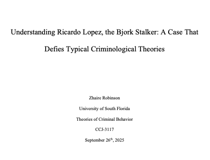
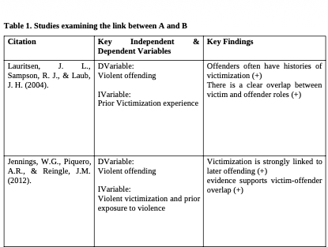

Maladaptive Coping Annotated Bibliography
Comprehensive review examining how childhood trauma affects both development and behavior later in life.
View Project
Understanding Criminological Theories
Academic essay exploring The case of Ricardo López, also known as the “Björk Stalker and how it illustrates the limits of these criminological theories.
View Project
Research Proposal: Violent Victimization and Criminal behavior
The connection between victimization and criminal behavior to help researchers and policymakers find better ways to prevent violence and support people who have experienced trauma.
View ProjectResearch Presentation: Sexual Violence and the Criminal Justice System
A research assignment using systems thinking and reflexive inquiry to explain why systemic failures surrounding sexual violence occur.
View Project